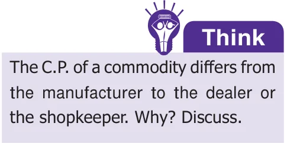
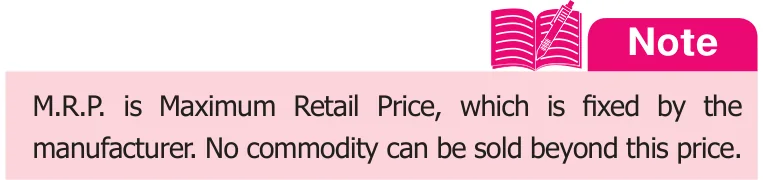
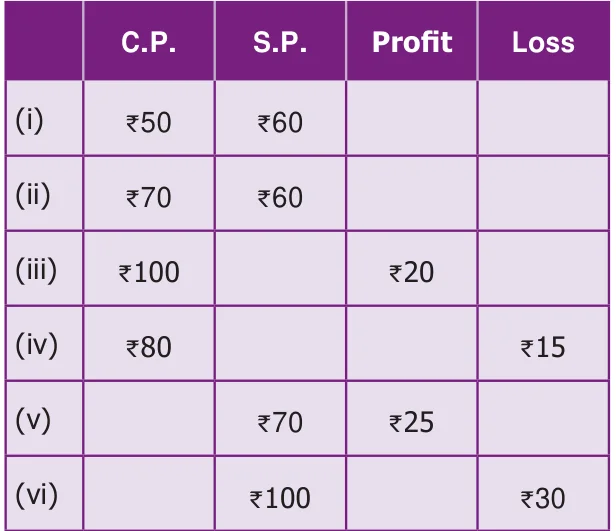
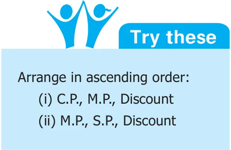
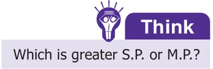
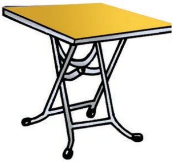
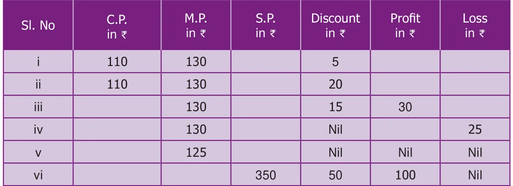
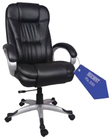
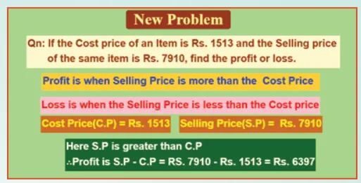
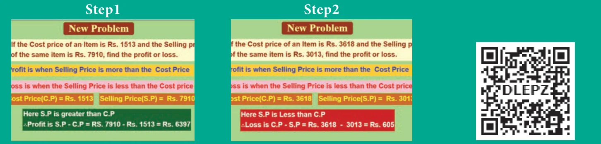

In our day-to-day life, we use many commodities like food, clothes, vehicles, books etc. Everything is produced by someone or by a team of people and sold directly to the people or through the dealers. When we buy anything, a dealer charges more than what the manufacturer charges. Because, the dealer invests some money to buy the goods, spends his time to bring them to his place and he wants to earn a bit more money than his investment. The excess money that the dealer collects from the people is called gain or profit. If he is in the situation of collecting less money than what he has paid to the manufacturer due to the urgent need of money or some other reason, he loses some money. This losing of money in his investment is called loss. This process of buying and selling goods involves either profit or loss. We shall discuss this in detail.

Cost Price (C.P.)
A shopkeeper purchases goods from a manufacturer or a supplier. This is called Purchase Price. He also meets out the overhead expenses like transport charges, wages, etc. So, the Cost Price (C.P.) consists of the capital, the cost of raw materials, the labour charges for production, the electricity charges, the transport charges etc.
For example, ABC Cars, the car manufacturing company buys raw materials for ₹2,00,000 per car, pays ₹70,000 to labourers, ₹15,000 towards electricity bill, ₹10,000 towards transports. Therefore, the Cost Price (C.P.) of a car produced is
₹2,00,000 + ₹70,000 + ₹15,000 + ₹10,000 = ₹2,95,000.
Note
The shopkeeper may require to spend some amount to bring the purchased commodities, like transport charges, wages to workers, toll fee etc., which come as part of "overhead expenses".
Marked Price (M.P.)
When a shopkeeper takes the goods from the dealer to his outlet for sales, he has to make profit in his business. So, he marks the price higher than the cost price of the goods. This price is called as Tag price or Marked Price (M.P.).
In the above example, ABC cars likes to make ₹50,000 as its profit. So, it fixes up the Marked Price (M.P.) of the car as ₹2,95,000 + ₹50,000 = ₹3,45,000.
Discount
The reduction of cost on the Marked Price for the purpose of attracting the customers or some other reasons is called Discount. To increase the sales, ABC cars is ready to reduce ₹5,000 to its customers, who is buying the car. Here the discount is ₹5,000.

Selling Price (S.P.)
The amount that a customer pays to a commodity, after availing the discount (wherever possible) is called as Selling Price (S.P.). The Marked Price of the car is ₹3,45,000. The S.P. of the car sold by ABC cars is
\(\text{₹}3,45,000 - \text{₹}5,000 = \text{₹}3,40,000.\) i.e., \(\text{M.P.} - \text{Discount} = \text{S.P.}\)
From the above discussion we can come to the following conclusions.
- If \(\text{C.P.} < \text{S.P.}\), there is Profit \(\Rightarrow \text{Profit} = \text{S.P.} - \text{C.P.}\)
- If \(\text{C.P.} > \text{S.P.}\), there is loss \(\Rightarrow \text{Loss} = \text{C.P.} - \text{S.P.}\)
- If \(\text{C.P.} = \text{S.P.}\), there is no profit or loss.
- \(\text{Discount} = \text{M.P.} - \text{S.P.}\) (or) \(\text{S.P.} = \text{M.P.} - \text{Discount}\).
- If there is no discount, then \(\text{M.P.} = \text{S.P.}\).
Example 3: Fill up the appropriate boxes in the following table:


Solution :
- \(\text{C.P.} < \text{S.P.} \Rightarrow \text{Profit} = \text{S.P.} - \text{C.P.} = \text{₹}60 - \text{₹}50 = \text{₹}10\)
- \(\text{C.P.} > \text{S.P.} \Rightarrow \text{Loss} = \text{C.P.} - \text{S.P.} = \text{₹}70 - \text{₹}60 = \text{₹}10\)
\(\text{Profit} = \text{S.P.} - \text{C.P.}\)
\(\Rightarrow \text{₹}20 = \text{S.P.} - \text{₹}100\)
\(\Rightarrow \text{S.P.} = \text{₹}20 + \text{₹}100 = \text{₹}120\)
\(\text{Loss} = \text{C.P.} - \text{S.P.}\)
\(\Rightarrow \text{₹}15 = \text{₹}80 - \text{S.P.}\)
\(\Rightarrow \text{S.P.} = \text{₹}80 - \text{₹}15 = \text{₹}65\)
\(\text{Profit} = \text{S.P.} - \text{C.P.}\)
\(\Rightarrow \text{₹}25 = \text{₹}70 - \text{C.P.}\)
\(\Rightarrow \text{C.P.} = \text{₹}70 - \text{₹}25 = \text{₹}45\)
\(\text{Loss} = \text{C.P.} - \text{S.P.}\)
\(\Rightarrow \text{₹}30 = \text{C.P.} - \text{₹}100\)
\(\Rightarrow \text{C.P.} = \text{₹}30 + \text{₹}100 = \text{₹}130\)


Example 4: A table is bought for ₹4500 and sold for ₹4800. Find the profit or loss.
Solution:
\(\text{C.P.} = \text{₹}4500\)
\(\text{S.P.} = \text{₹}4800\)
\(\text{Here, }\text{C.P.} < \text{S.P.} \Rightarrow \text{Profit} = \text{S.P.} - \text{C.P.}\)
\(= \text{₹}4800 - \text{₹}4500 = \text{₹}300\)
Example 5: A fruit seller bought a basket of fruits for ₹500. During the transit some fruits were damaged. So, he was able to sell the remaining fruits for ₹480. Find the profit or loss in his business.
Solution :
\(\text{C.P.} = \text{₹}500\)
\(\text{S.P.} = \text{₹}480\)
\(\text{Here, }\text{C.P.} > \text{S.P.} \Rightarrow \text{Loss} = \text{C.P.} - \text{S.P.} = \text{₹}500 - \text{₹}480 = \text{₹}20\)
Example 6: Pari bought a Motor cycle for ₹55,000 and he gained ₹5500 on selling the same. What is the selling price of the motor cycle?
Solution :
\(\text{C.P.} = \text{₹}55,000\)
\(\text{Profit} = \text{₹}5,500\)
\(\text{Profit} = \text{S.P.} - \text{C.P.}\)
\(\text{₹}5,500 = \text{S.P.} - \text{₹}55,000\)
\(\text{S.P.} = \text{₹}5,500 + \text{₹}55,000 = \text{₹}60,500\)
Example 7: Manimegalai purchased a house for ₹25,52,500 and spent ₹2,28,350 for its repair. She sold it for ₹30,52,000. Find her gain or loss.
Solution :
\(\text{C.P.} = \text{₹}25,52,500 + \text{₹}2,28,350 = \text{₹}27,80,850\)
\(\text{S.P.} = \text{₹}30,52,000.\)
\(\text{C.P.} < \text{S.P.} \Rightarrow \text{Profit} = \text{S.P.} - \text{C.P.} = \text{₹}30,52,000 - \text{₹}27,80,850 = \text{₹}2,71,150.\)
Example 8: A man bought 75 Mangoes for ₹300 and sold 50 Mangoes for ₹300. If he sold all the mangoes at the same price, find his profit or loss.
Solution :
If the man bought 75 Mangoes for ₹300 then, Cost Price of 1 Mango \(= 300/75 = \text{₹}4\)
If 50 Mangoes were sold for ₹300 then, Selling Price of 1 Mango is \(300/50 = \text{₹}6\)
\(\therefore\) Selling price of 75 Mangoes at the rate of ₹6 is \(75 \times 6 = \text{₹}450\)
\(\text{Selling Price} > \text{Cost Price}\)
\(\therefore \text{Profit} = \text{Selling Price} - \text{Cost Price} = 450 - 300 = \text{₹}150\)
Example 9: A fruit seller bought a dozen apples for ₹84. 2 apples got rotten. If he has to get a profit of ₹16, find the S.P. of each apple.
Solution :
Cost price of 12 apples \(= \text{₹}84.\)
Since 2 apples got rotten, the number of remaining apples \(= 10\)
Since profit is ₹16, Selling price of 10 apples \(= \text{C.P.} + \text{Profit} = \text{₹}84 + \text{₹}16 = \text{₹}100\)
\(\therefore\) Selling price of 1 apple \(= 100/10 = \text{₹}10\)
Example 10: Wheat is being sold at ₹1550 per bag of 25 kg at a profit of ₹150. Find the cost price of the wheat bag.
Solution :
\(\text{Selling price} = \text{₹}1550\)
\(\text{Profit} = \text{₹}150\)
\(\text{Profit} = \text{S.P.} - \text{C.P.}\)
\(\text{₹}150 = \text{₹}1550 - \text{C.P.}\)
\(\text{Cost price} = \text{₹}1550 - \text{₹}150 = \text{₹}1400\)
Example 11: Complete the following table.

Solution:
\(\text{C.P.} = \text{₹}110\)
\(\text{M.P.} = \text{₹}130\)
\(\text{Discount} = \text{₹}5\)
\(\text{S.P.} = \text{M.P.} - \text{Discount}\)
\(= \text{₹}130 - \text{₹}5\)
\(= \text{₹}125\)
\(\text{Profit} = \text{S.P.} - \text{C.P.}\)
\(= \text{₹}125 - \text{₹}110\)
\(= \text{₹}15\)
\(\text{C.P.} = \text{₹}110\)
\(\text{M.P.} = \text{₹}130\)
\(\text{Discount} = \text{₹}20\)
\(\text{S.P.} = \text{M.P.} - \text{Discount}\)
\(= \text{₹}130 - \text{₹}20\)
\(= \text{₹}110\)
\(\text{C.P.} = \text{S.P.} \Rightarrow \text{No profit or No loss.}\)
\(\text{M.P.} = \text{₹}130\)
\(\text{Discount} = \text{₹}15\)
\(\text{S.P.} = \text{M.P.} - \text{Discount}\)
\(= \text{₹}130 - \text{₹}15\)
\(= \text{₹}115\)
\(\text{Profit} = \text{₹}30\)
\(\text{Profit} = \text{S.P.} - \text{C.P.}\)
\(\text{₹}30 = \text{₹}115 - \text{C.P.}\)
\(\text{C.P.} = \text{₹}115 - \text{₹}30\)
\(= \text{₹}85\)
\(\text{M.P.} = \text{₹}130\)
\(\text{Loss} = \text{₹}25\)
\(\text{S.P.} = \text{M.P.} - \text{Discount}\)
\(= \text{₹}130 - \text{₹}0\)
\(= \text{₹}130\)
\(\text{Loss} = \text{C.P.} - \text{S.P.}\)
\(\text{₹}25 = \text{C.P.} - \text{₹}130\)
\(\text{C.P.} = \text{₹}25 + \text{₹}130\)
\(= \text{₹}155\)
\(\text{M.P.} = \text{₹}125\)
\(\text{Discount} = \text{₹}0\)
\(\text{S.P.} = \text{M.P.} - \text{Discount}\)
\(= \text{₹}125 - \text{₹}0\)
\(= \text{₹}125\)
\(\text{No profit / No loss}\)
\(\text{C.P.} = \text{S.P.}\)
\(\text{C.P.} = \text{₹}125\)
\(\text{S.P.} = \text{₹}350\)
\(\text{Discount} = \text{₹}50\)
\(\text{Profit} = \text{₹}100\)
\(\text{M.P.} = \text{S.P.} + \text{Discount}\)
\(= \text{₹}350 + \text{₹}50 = \text{₹}400\)
\(\text{Profit} = \text{S.P.} - \text{C.P.}\)
\(\text{₹}100 = \text{₹}350 - \text{C.P.}\)
\(\text{C.P.} = \text{₹}350 - \text{₹}100\)
\(= \text{₹}250\)
Example 12: Barathan offers his customers a discount of ₹50 on each shirt and still makes a profit of ₹100 per shirt. What is the actual cost price of the shirt that is marked @ ₹800 ?
Solution :
\(\text{Discount} = \text{₹}50\)
\(\text{Profit} = \text{₹}100\)
\(\text{M.P.} = \text{₹}800\)
\(\text{S.P.} = \text{M.P.} - \text{Discount}\)
\(= \text{₹}800 - \text{₹}50\)
\(= \text{₹}750\)
\(\text{Profit} = \text{S.P.} - \text{C.P.}\)
\(\text{₹}100 = \text{₹}750 - \text{C.P.}\)
\(\text{C.P.} = \text{₹}750 - \text{₹}100\)
\(= \text{₹}650\)
Example 13: Raghu buys a chair for ₹3000. He wants to sell it at a profit of ₹500 after making a discount of ₹300. What is the M.P. of the chair?
Solution :

\(\text{C.P.} = \text{₹}3000;\quad \text{Profit} = \text{₹}500;\quad \text{Discount} = \text{₹}300\)
\(\text{S.P.} = \text{M.P.} - \text{Discount} = \text{M.P.} - \text{₹}300\)
\(\text{Profit} = \text{S.P.} - \text{C.P.}\)
\(\text{₹}500 = \text{M.P.} - \text{₹}300 - \text{₹}3000\)
\(\text{M.P.} = \text{₹}500 + \text{₹}300 + \text{₹}3000 = \text{₹}3800\)
Example 14: Mani buys a gift article for ₹1500. He wants to sell it at a profit of ₹150 on sales and he marks @ ₹1800. What is the discount that he will give to his customers?
Solution :
\(\text{C.P.} = \text{₹}1500;\quad \text{Profit} = \text{₹}150;\quad \text{M.P.} = \text{₹}1800\)
\(\text{S.P.} = \text{M.P.} - \text{Discount} = \text{₹}1800 - \text{Discount}\)
\(\text{Profit} = \text{S.P.} - \text{C.P.} \Rightarrow \text{₹}150 = \text{₹}1800 - \text{Discount} - \text{₹}1500\)
\(\text{Discount} = \text{₹}1800 - \text{₹}1500 - \text{₹}150 = \text{₹}150\)
BILL, PROFIT and LOSS
ICT CORNER
Expected Outcome

Step 1 Open the Browser and type the URL Link given below (or) Scan the QR Code. GeoGebra work sheet named “Profit and Loss” will open. The work sheet contains two activities. Click on “New Problem to change the problem. Read the given problem carefully.
Step 2 Work out yourself and check whether the answer is correct.

Browse in the link:
BILLS, PROFIT and LOSS: https://ggbm.at/p7DZHP6K or Scan the QR Code.